Part 3 — Deep Learning Integration Methods#
In this notebook we demonstrate multi-omic integration using neural network encoders.
We will be performing two types of integration
Strategy |
Description |
|---|---|
Early integration MLP |
Concatenate all omics, then model |
Multi-modal encoder |
Separate encoder per omic, then combine |
Early integration is the same technique applied in part 1, however, this time we will be employing a more powerful neural network architecture which has better capacity to learn compared to a linear regression model.
Early integration concatenates all omic matrices into one large feature vector before modelling.
transcriptomics ]
proteomics ] ──► concat ──► MLP ──► subtype
methylation ]
This is simple and often effective, but treats all features as one undifferentiated block.
A multi-modal encoder keeps each omic separated at the input.
transcriptomics ──► Encoder_T ──┐
proteomics ──► Encoder_P ──┼──► concat ──► Classifier ──► subtype
methylation ──► Encoder_M ──┘
Each omic-specific encoder learns features relevant to that data type.
The per-omic embeddings are concatenated into a joint multi-omic representation used for subtype prediction.
Workshop goals#
Understand what a neural network is.
Build a simple early-integration neural network.
Build a multi-modal encoder with one encoder per omic view.
Compare both approaches using the same train/test split.
Extract a learned embedding space and visualise it with t-SNE.
Key takeaways#
Deep learning methods can combine information shared across omics with information specific to individual omics.
Supervised neural networks learn representations useful for the prediction task.
Multi-modal encoder embeddings can be reused as compact multi-omic patient profiles.
Outcome#
By the end of this notebook you will have a trained neural network that produces patient-level multi-omic embeddings, visualised in 2-D with t-SNE.
1. Import Libraries and Helpers#
# ── Imports ──────────────────────────────────────────────────────────────────
from pathlib import Path
import random
import pickle
import numpy as np
import pandas as pd
import matplotlib.pyplot as plt
import seaborn as sns
import matplotlib.cm as cm
from sklearn.preprocessing import LabelEncoder, StandardScaler
from sklearn.metrics import (
accuracy_score,
balanced_accuracy_score,
classification_report,
)
from sklearn.decomposition import PCA
from sklearn.manifold import TSNE
import torch
from torch import nn
from torch.utils.data import TensorDataset, DataLoader
from torchview import draw_graph
# ── Custom Imports ────────────────────────────────────────────────────────────
from helpers import load_omics, evaluate_predictions
# ── Reproducibility ───────────────────────────────────────────────────────────
RANDOM_STATE = 42
def set_seed(seed: int = RANDOM_STATE) -> None:
"""Seed all relevant random-number generators for reproducibility."""
random.seed(seed)
np.random.seed(seed)
torch.manual_seed(seed)
torch.cuda.manual_seed_all(seed)
set_seed()
# ── Device selection (GPU if available, otherwise CPU) ────────────────────────
device = torch.device("cuda" if torch.cuda.is_available() else "cpu")
print(f"Using device: {device}")
if device.type == "cuda":
print(f" GPU: {torch.cuda.get_device_name(0)}")
Using device: cuda
GPU: NVIDIA H100 MIG 1g.12gb
2. Load the prepared omics data and patient train / test splits#
We separate:
subtypeas the prediction targetall remaining columns as omic features
the index as the patient ID
DATA_DIR = Path("../../data_tmp/TCGA-BRCA/")
X_views , y_raw = load_omics(DATA_DIR , omic_keys=['transcriptomics' , 'proteomics', 'methylation'])
with open(f'{DATA_DIR}/patient_splits.pkl' , 'rb') as file :
data = pickle.load(file)
train_ids = data['train_ids']
test_ids = data['test_ids']
Omic view dimensions:
transcriptomics: 500 patients × 29995 features
proteomics : 500 patients × 464 features
methylation : 500 patients × 200000 features
Subtype counts:
paper_BRCA_Subtype_PAM50
LumA 237
LumB 100
Basal 97
Her2 41
Normal 25
Name: count, dtype: int64
3. Encode labels and scale features#
Neural networks cannot predict “string” classes e.g. “Lum A”. Therefore we simply encode each label as an integer using the LabelEncoder() function.
Neural networks train more reliably when features are on a comparable scale. Omics often have different scales e.g. Gene expression [0 , ~100), methylation m-values [0,1], and proteomic counts [0, ~100].
For a neural network we want everything to be normally distributed around 0 with a standard deviation of 1 as per the image below.
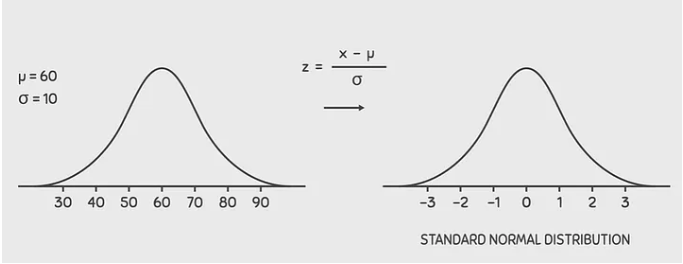
Important: Scalers are fit on training data only and then applied to the test set to prevent data leakage.
# ── Label encoding ────────────────────────────────────────────────────────────
label_encoder = LabelEncoder()
y_train = label_encoder.fit_transform(y_raw.loc[train_ids])
y_test = label_encoder.transform(y_raw.loc[test_ids])
class_names = label_encoder.classes_
n_classes = len(class_names)
print("Classes:", list(class_names))
print("Encoded Label:",label_encoder.transform(label_encoder.classes_))
# ── Feature scaling (fit on train, apply to test) ─────────────────────────────
scalers = {}
X_train_views = {}
X_test_views = {}
for name, X in X_views.items():
fig, axes = plt.subplots(1, 2, figsize=(14, 5))
sns.kdeplot(X.mean(axis = 1), fill=True, ax=axes[0])
axes[0].set_title("Before StandardScaler", fontsize=14, fontweight="bold")
axes[0].set_xlabel("Per-patient mean feature value")
axes[0].set_ylabel("Density")
axes[0].spines[["top", "right"]].set_visible(False)
if np.isclose(X.iloc[: , 0].mean() , 0, rtol=1e-2) and np.isclose(X.iloc[: , 0].std() , 1, rtol=1e-2) :
print(f'{name} is already standardised')
X_train_views[name] = X.loc[train_ids].astype(np.float32)
X_test_views[name] = X.loc[test_ids].astype(np.float32)
else :
scaler = StandardScaler()
X_train_views[name] = scaler.fit_transform(X.loc[train_ids]).astype(np.float32)
X_test_views[name] = scaler.transform(X.loc[test_ids]).astype(np.float32)
scalers[name] = scaler
sns.kdeplot(X_train_views[name].mean(axis = 1), fill=True, ax=axes[1] , color='red')
axes[1].set_title("After StandardScaler", fontsize=14, fontweight="bold")
axes[1].set_xlabel("Per-patient mean feature value")
axes[1].set_ylabel("Density")
axes[1].spines[["top", "right"]].set_visible(False)
plt.suptitle(f"{name} Feature Distribution Before vs After Scaling", fontsize=15, y=1.02)
plt.tight_layout()
plt.show()
input_dims = {name: arr.shape[1] for name, arr in X_train_views.items()}
print("\nInput dimensions per view:")
for name, dim in input_dims.items():
print(f" {name:15s}: {dim}")
Classes: ['Basal', 'Her2', 'LumA', 'LumB', 'Normal']
Encoded Label: [0 1 2 3 4]
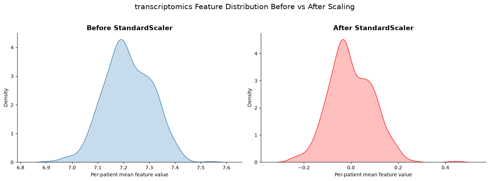
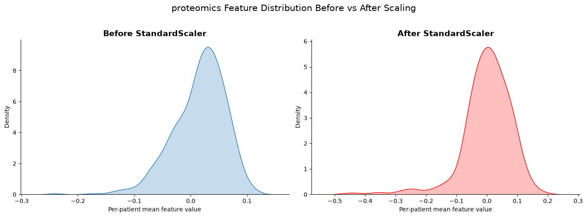
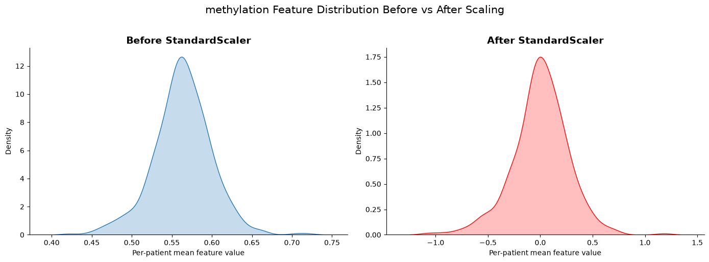
Input dimensions per view:
transcriptomics: 29995
proteomics : 464
methylation : 200000
4. Helper functions for training and evaluation of a Neural Network#
make_loader()
GPU memory is more constrained than CPU memory. This function wraps a single omics dataset into a data loader, which packages the data into chunks (batches) that can be passed incrementally to the GPU during training.make_multiview_loader()
Where make_loader() handles one omic at a time, make_multiview_loader() handles multiple omics concurrently by building a list of tensors, one per omic view.train_classifier()
A wrapper for training the neural network. It transfers data to the target device (CPU or GPU) in batches and performs the necessary gradient algorithm steps, including optimisation and loss computation. See Loss Functions and Optimizers in Deep Learning for further details.predict()
A wrapper for generating predictions from a trained model. Follows the same structure as train_classifier() but omits optimisation and loss computation, as the model weights are frozen during inference.get_embeddings()
A wrapper for extracting multi-omic embeddings (profiles) from the model. It calls model.forward() to obtain the output of the second-to-last layer, which represents what the model has learned.
The final layer is treated as a linear map from embedding space to output, while the second-to-last layer is treated as the learned representation.evaluate_predictions()
Given predicted values and true labels, this function computes and prints the relevant evaluation metrics.
These helpers keep the modelling cells concise.
The training loop uses:
Mini-batch gradient descent via
DataLoaderCross-entropy loss for multi-class subtype prediction
Adam optimiser with weight decay (L2 regularisation)
def make_loader(
X: np.ndarray,
y: np.ndarray,
batch_size: int = 32,
shuffle: bool = True,
) -> DataLoader:
"""Wrap a single feature matrix and label array in a DataLoader."""
dataset = TensorDataset(
torch.tensor(X, dtype=torch.float32),
torch.tensor(y, dtype=torch.long),
)
return DataLoader(dataset, batch_size=batch_size, shuffle=shuffle)
def make_multiview_loader(
X_views_dict: dict,
y: np.ndarray,
batch_size: int = 32,
shuffle: bool = True,
) -> DataLoader:
"""Wrap one tensor per omic view plus labels in a DataLoader."""
tensors = [
torch.tensor(X_views_dict[name], dtype=torch.float32)
for name in X_views_dict
]
tensors.append(torch.tensor(y, dtype=torch.long))
return DataLoader(TensorDataset(*tensors), batch_size=batch_size, shuffle=shuffle)
def train_classifier(
model: nn.Module,
train_loader: DataLoader,
n_epochs: int = 50,
lr: float = 1e-3,
weight_decay: float = 1e-4,
) -> list[float]:
"""Train a classifier and return the per-epoch loss history."""
model = model.to(device)
optimiser = torch.optim.Adam(model.parameters(), lr=lr, weight_decay=weight_decay)
criterion = nn.CrossEntropyLoss()
history: list[float] = []
for epoch in range(n_epochs):
model.train()
running_loss = 0.0
for batch in train_loader:
*features, target = batch
features = [x.to(device) for x in features]
target = target.to(device)
optimiser.zero_grad()
logits = model(*features)
loss = criterion(logits, target)
loss.backward()
optimiser.step()
running_loss += loss.item() * target.size(0)
epoch_loss = running_loss / len(train_loader.dataset)
history.append(epoch_loss)
if (epoch + 1) % 2 == 0:
print(f" Epoch {epoch + 1:03d}/{n_epochs} | loss = {epoch_loss:.4f}")
return history
@torch.no_grad()
def predict(model: nn.Module, loader: DataLoader) -> np.ndarray:
"""Return predicted class indices for every sample in a DataLoader."""
model.eval()
preds: list[np.ndarray] = []
for batch in loader:
*features, _ = batch
features = [x.to(device) for x in features]
logits = model(*features)
preds.append(logits.argmax(dim=1).cpu().numpy())
return np.concatenate(preds)
@torch.no_grad()
def get_embeddings(model: nn.Module, loader: DataLoader, n_mod=None) -> tuple[np.ndarray, np.ndarray, np.int8]:
"""Extract the latent embedding and true labels from a DataLoader."""
model.eval()
embeddings: list[np.ndarray] = []
labels: list[np.ndarray] = []
for batch in loader:
*features, target = batch
features = [x.to(device) for x in features]
if n_mod is not None :
features = [features[n_mod]]
emb = model(*features)
else :
emb = model.embed(*features)
embeddings.append(emb.cpu().numpy())
labels.append(target.numpy())
return np.vstack(embeddings), np.concatenate(labels)
5. Baseline: early-integration MLP#
Multi-Layer Perceptron (MLP)#
Forward Pass#
For an MLP with \( L \) layers, given input \( \mathbf{x} \in \mathbb{R}^{d} \), set \( \mathbf{a}^{(0)} = \mathbf{x} \).
For each hidden layer \( l = 1, \dots, L-1 \):
Linear transformation:
MLP vs. Linear Regression#
An MLP follows what is known as the Universal Approximation Theorem:
A sufficiently wide (or deep) MLP can approximate any continuous function to an arbitrary degree of accuracy.
In plain terms — no matter how complex the relationship between your inputs and outputs, an MLP can in theory learn to mimic it, given enough neurons and layers.
By stacking multiple MLP layers together, then we can capture non-linear relationships between features.
A linear regression model is fixed to learn only a linear relationship. Therefore, we expect the neural network here to improve compared to the linear regression in Part A
# Concatenate all omic views into a single feature matrix.
X_train_early = np.concatenate(
[X_train_views[name] for name in X_train_views], axis=1
)
X_test_early = np.concatenate(
[X_test_views[name] for name in X_test_views], axis=1
)
print(f"Early integration — train : {X_train_early.shape}")
print(f"Early integration — test : {X_test_early.shape}")
Early integration — train : (375, 230459)
Early integration — test : (125, 230459)
class EarlyIntegrationMLP(nn.Module):
"""
A two-layer MLP for concatenated multi-omic features.
Architecture
------------
Input (all omics concatenated)
→ Linear(input_dim → hidden_dim) → ReLU → Dropout
→ Linear(hidden_dim → embedding_dim) → ReLU [encoder]
→ Linear(embedding_dim → n_classes) [classifier head]
"""
def __init__(
self,
input_dim: int,
hidden_dim: int = 128,
embedding_dim: int = 32,
n_classes: int = 2,
dropout: float = 0.25,
) -> None:
super().__init__()
self.encoder = nn.Sequential(
nn.Linear(input_dim, hidden_dim),
nn.ReLU(),
nn.Dropout(dropout),
nn.Linear(hidden_dim, embedding_dim),
nn.ReLU(),
)
self.classifier = nn.Linear(embedding_dim, n_classes)
def forward(self, x: torch.Tensor) -> torch.Tensor:
return self.classifier(self.encoder(x))
def embed(self, x: torch.Tensor) -> torch.Tensor:
"""Return the latent embedding (before the classification head)."""
return self.encoder(x)
# ── Architecture diagram ──────────────────────────────────────────────────────
_early_model_for_graph = EarlyIntegrationMLP(
input_dim=X_train_early.shape[1],
hidden_dim=32,
embedding_dim=8,
n_classes=n_classes,
)
graph = draw_graph(
_early_model_for_graph,
input_size=(128, X_train_early.shape[1]),
device="meta",
graph_name="EarlyIntegrationMLP",
)
graph.visual_graph
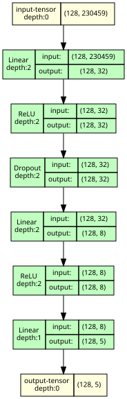
early_model = EarlyIntegrationMLP(
input_dim=X_train_early.shape[1],
hidden_dim=32,
embedding_dim=8,
n_classes=n_classes,
).to(device)
early_train_loader = make_loader(X_train_early, y_train, batch_size=1024, shuffle=True)
early_test_loader = make_loader(X_test_early, y_test, batch_size=256, shuffle=False)
print("Training early-integration MLP …")
early_history = train_classifier(early_model, early_train_loader, n_epochs=10)
early_pred = predict(early_model, early_test_loader)
_ = evaluate_predictions(y_test, early_pred, "Early Integration MLP")
Training early-integration MLP …
Epoch 002/10 | loss = 4.9258
Epoch 004/10 | loss = 2.7765
Epoch 006/10 | loss = 2.5504
Epoch 008/10 | loss = 1.7615
Epoch 010/10 | loss = 1.6474
Early Integration MLP
─────────────────────
Accuracy : 0.648
Balanced accuracy : 0.588
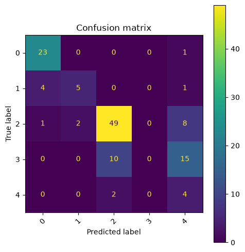
6. Multi-modal encoder network#
Why a Single MLP Is Not Enough for Multi-Omics Data#
A single MLP trained on concatenated multi-omics features produces one unified profile across all omics simultaneously. The issue is that each omic layer (e.g. transcriptomics, proteomics, methylation) is expected to contain two kinds of signal:
Shared information across omics (complementary signal)
Unique information within each omic (individual signal)
A single MLP has no explicit way to separate these. In practice, it will simply prioritise whichever features—regardless of which omic they come from—are most predictive of the outcome.
A Better Approach: The Multi-Omics Encoder#
Instead of feeding all omics into one model at once, a multi-omics encoder first learns a compressed representation (latent space) for each omic independently, and then combines these representations for the final prediction.
This is motivated by a biological intuition: feature relationships are often stronger within an omic (e.g. co-expressed genes within transcriptomics) than across omics. By modelling within-omic interactions first—before integration—we preserve structure that a naive concatenation approach may discard.
Advantages of Combining Latent Spaces#
Integrating at the latent space level instead of the raw feature level has two practical benefits:
Memory efficiency
Raw omics feature spaces are high-dimensional. Concatenating them directly creates a very large input space that is expensive to work with. Compressing each omic first substantially reduces this cost.Preserved omic structure
Each omic retains its own learned representation before integration, so unique and complementary signals within each omic are less likely to be lost during the combination step.
class MultiOmicEncoder(nn.Module):
"""
One independent encoder per omic view, followed by a shared classifier.
Architecture
------------
For each omic view:
Input_i → Linear(dim_i → joint_embedding_dim) → ReLU → Dropout
→ Linear(joint_embedding_dim → view_embedding_dim) → ReLU
Then:
concat(all view embeddings)
→ Linear(joint_dim → joint_embedding_dim) → ReLU → Dropout
→ Linear(joint_embedding_dim → n_classes)
"""
def __init__(
self,
input_dims: dict[str, int],
view_embedding_dim: int = 16,
joint_embedding_dim: int = 64,
n_classes: int = 2,
dropout: float = 0.25,
) -> None:
super().__init__()
self.view_names = list(input_dims.keys())
# One small encoder per omic view.
self.encoders = nn.ModuleDict({
name: nn.Sequential(
nn.Linear(dim, view_embedding_dim),
nn.ReLU(),
nn.Dropout(dropout),
)
for name, dim in input_dims.items()
})
joint_dim = view_embedding_dim * len(input_dims)
# Shared classifier over the concatenated embeddings.
self.joint_embedding = nn.Sequential(
nn.Linear(joint_dim, joint_embedding_dim),
nn.ReLU(),
nn.Dropout(dropout),
)
self.classifier = nn.Linear(joint_embedding_dim, n_classes)
def forward(self, *views: torch.Tensor) -> torch.Tensor:
joint = torch.cat(
[self.encoders[name](x) for name, x in zip(self.view_names, views)],
dim=1,
)
return self.classifier(self.joint_embedding(joint))
def embed(self, *views: torch.Tensor) -> torch.Tensor:
"""Return the joint embedding (concatenated per-omic embeddings)."""
joint = torch.cat(
[self.encoders[name](x) for name, x in zip(self.view_names, views)],
dim=1,
)
return self.joint_embedding(joint)
# ── Architecture diagram ──────────────────────────────────────────────────────
_multi_model_for_graph = MultiOmicEncoder(
input_dims=input_dims,
view_embedding_dim=32,
joint_embedding_dim=8,
n_classes=n_classes,
)
# Build one dummy tensor per omic view for the graph pass.
_dummy_inputs = tuple(
torch.zeros(128, dim) for dim in input_dims.values()
)
multi_graph = draw_graph(
_multi_model_for_graph,
input_data=list(_dummy_inputs),
device="meta",
graph_name="MultiOmicEncoder",
expand_nested=True,
)
multi_graph.visual_graph
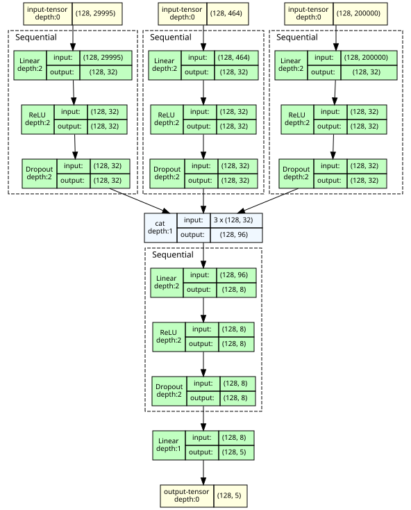
multi_model = MultiOmicEncoder(
input_dims=input_dims,
view_embedding_dim=32,
joint_embedding_dim=8,
n_classes=n_classes,
).to(device)
multi_train_loader = make_multiview_loader(X_train_views, y_train, batch_size=1024, shuffle=True)
multi_test_loader = make_multiview_loader(X_test_views, y_test, batch_size=256, shuffle=False)
print("Training multi-modal encoder …")
multi_history = train_classifier(multi_model, multi_train_loader, n_epochs=10)
multi_pred = predict(multi_model, multi_test_loader)
_ = evaluate_predictions(y_test, multi_pred, "Multi-Modal Encoder Network")
Training multi-modal encoder …
Epoch 002/10 | loss = 2.8066
Epoch 004/10 | loss = 1.2402
Epoch 006/10 | loss = 1.0610
Epoch 008/10 | loss = 0.9615
Epoch 010/10 | loss = 0.8110
Multi-Modal Encoder Network
───────────────────────────
Accuracy : 0.720
Balanced accuracy : 0.731
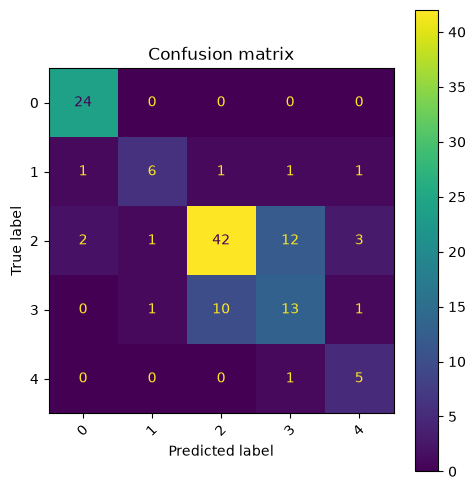
7. Compare model performance#
Because both models used the same train/test split, the comparison is direct.
When comparing the performance of neural networks its useful to compare accuracy, but we can also look at our loss functions.
The loss function can tell us if the model is still learning (decreasing training loss) or overfitting (decreasing validation loss).
results = pd.DataFrame({
"Model": ["Early Integration MLP", "Multi-Modal Encoder"],
"Accuracy": [
accuracy_score(y_test, early_pred),
accuracy_score(y_test, multi_pred),
],
"Balanced Accuracy": [
balanced_accuracy_score(y_test, early_pred),
balanced_accuracy_score(y_test, multi_pred),
],
})
display(results.sort_values("Balanced Accuracy", ascending=False).reset_index(drop=True))
| Model | Accuracy | Balanced Accuracy | |
|---|---|---|---|
| 0 | Multi-Modal Encoder | 0.720 | 0.730667 |
| 1 | Early Integration MLP | 0.648 | 0.588333 |
fig, ax = plt.subplots(figsize=(7, 4))
ax.plot(early_history, label="Early Integration MLP", linewidth=2)
ax.plot(multi_history, label="Multi-Modal Encoder", linewidth=2)
ax.set_xlabel("Epoch")
ax.set_ylabel("Training Loss (cross-entropy)")
ax.set_title("Training Curves")
ax.legend()
ax.grid(True, alpha=0.3)
plt.tight_layout()
plt.show()
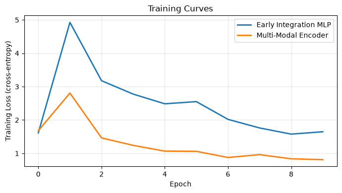
def train_classifier_val(
model: nn.Module,
train_loader: DataLoader,
test_loader: DataLoader,
n_epochs: int = 50,
lr: float = 1e-3,
weight_decay: float = 1e-4,
) -> tuple[list[float], list[float]]:
"""Train a classifier and return per-epoch training and validation loss."""
model = model.to(device)
optimiser = torch.optim.Adam(model.parameters(), lr=lr, weight_decay=weight_decay)
criterion = nn.CrossEntropyLoss()
history: list[float] = []
val_history: list[float] = []
for epoch in range(n_epochs):
# ── Training ───────────────────────────────────────────────────────
model.train()
running_loss = 0.0
for batch in train_loader:
*features, target = batch
features = [x.to(device) for x in features]
target = target.to(device)
optimiser.zero_grad()
logits = model(*features)
loss = criterion(logits, target)
loss.backward()
optimiser.step()
running_loss += loss.item() * target.size(0)
train_epoch_loss = running_loss / len(train_loader.dataset)
history.append(train_epoch_loss)
# ── Validation ────────────────────────────────────────────────────
model.eval()
running_val_loss = 0.0
with torch.no_grad():
for batch in test_loader:
*features, target = batch
features = [x.to(device) for x in features]
target = target.to(device)
logits = model(*features)
loss = criterion(logits, target)
running_val_loss += loss.item() * target.size(0)
val_epoch_loss = running_val_loss / len(test_loader.dataset)
val_history.append(val_epoch_loss)
if (epoch + 1) % 10 == 0:
print(
f" Epoch {epoch + 1:03d}/{n_epochs} | "
f"train loss = {train_epoch_loss:.4f} | val loss = {val_epoch_loss:.4f}"
)
return history, val_history
multi_model = MultiOmicEncoder(
input_dims=input_dims,
view_embedding_dim=32,
joint_embedding_dim=8,
n_classes=n_classes,
).to(device)
multi_train_loader = make_multiview_loader(X_train_views, y_train, batch_size=1024, shuffle=True)
multi_test_loader = make_multiview_loader(X_test_views, y_test, batch_size=256, shuffle=False)
print("Training multi-modal encoder …")
multi_history, multi_val_history = train_classifier_val(multi_model, multi_train_loader, multi_test_loader, n_epochs=75)
Training multi-modal encoder …
Epoch 010/75 | train loss = 0.7810 | val loss = 1.0658
Epoch 020/75 | train loss = 0.5415 | val loss = 0.9337
Epoch 030/75 | train loss = 0.3336 | val loss = 1.3183
Epoch 040/75 | train loss = 0.2733 | val loss = 1.5953
Epoch 050/75 | train loss = 0.2855 | val loss = 1.7648
Epoch 060/75 | train loss = 0.2826 | val loss = 1.7497
Epoch 070/75 | train loss = 0.2008 | val loss = 1.5984
fig, ax = plt.subplots(figsize=(7, 4))
# Left y-axis: training loss
ax.plot(multi_history, label="Multi-Modal Encoder (train)", linewidth=2)
ax.set_xlabel("Epoch")
ax.set_ylabel("Training Loss (cross-entropy)")
ax.set_title("Training Curves")
ax.grid(True, alpha=0.3)
# Right y-axis: validation loss
ax2 = ax.twinx()
ax2.plot(
multi_val_history,
label="Multi-Modal Encoder (val)",
linewidth=2,
linestyle="--",
)
ax2.set_ylabel("Validation Loss (cross-entropy)")
# Combined legend (from both axes)
lines, labels = ax.get_legend_handles_labels()
lines2, labels2 = ax2.get_legend_handles_labels()
ax.legend(lines + lines2, labels + labels2, loc="best")
plt.tight_layout()
plt.show()
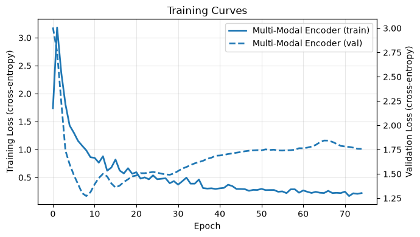
8. Inspect the learned multi-omic embedding space#
The multi-modal encoder produces one compact vector per patient — a learned multi-omic profile.
We can visualise this embedding in three ways:
Method |
What it shows |
|---|---|
PCA |
Linear projection preserving global variance |
t-SNE |
Non-linear projection emphasising local cluster structure |
UMAP |
Non-linear projection preserving local neighbourhood structure while better maintaining global structure than t‑SNE |
Here, we will just show the output from t-SNE
# Early fusion model — embeddings from train and test splits.
train_emb_early, train_emb_y_early = get_embeddings(early_model, early_train_loader)
test_emb_early, test_emb_y_early = get_embeddings(early_model, early_test_loader)
print(f"[Early] Train embedding : {train_emb_early.shape}")
print(f"[Early] Test embedding : {test_emb_early.shape}")
# Multi-modal model — embeddings from train and test splits.
train_emb_multi, train_emb_y_multi = get_embeddings(multi_model, multi_train_loader)
test_emb_multi, test_emb_y_multi = get_embeddings(multi_model, multi_test_loader)
print(f"[Multi] Train embedding : {train_emb_multi.shape}")
print(f"[Multi] Test embedding : {test_emb_multi.shape}")
# ── t-SNE projections ─────────────────────────────────────────────────────────
# Fit t-SNE on all available embeddings (train + test) for a stable layout.
# Done separately per model so each projection reflects its own embedding space.
# Early fusion model t-SNE
all_emb_early = np.vstack([train_emb_early, test_emb_early])
all_y_early = np.concatenate([train_emb_y_early, test_emb_y_early])
all_tsne_early = TSNE(
n_components=2,
perplexity=30,
random_state=RANDOM_STATE,
init="pca",
).fit_transform(all_emb_early)
n_train_early = len(train_emb_early)
tsne_df_early = pd.DataFrame({
"TSNE1": all_tsne_early[:, 0],
"TSNE2": all_tsne_early[:, 1],
"subtype": label_encoder.inverse_transform(all_y_early),
"split": ["train"] * n_train_early + ["test"] * len(test_emb_early),
})
# Multi-modal model t-SNE
all_emb_multi = np.vstack([train_emb_multi, test_emb_multi])
all_y_multi = np.concatenate([train_emb_y_multi, test_emb_y_multi])
all_tsne_multi = TSNE(
n_components=2,
perplexity=30,
random_state=RANDOM_STATE,
init="pca",
).fit_transform(all_emb_multi)
n_train_multi = len(train_emb_multi)
tsne_df_multi = pd.DataFrame({
"TSNE1": all_tsne_multi[:, 0],
"TSNE2": all_tsne_multi[:, 1],
"subtype": label_encoder.inverse_transform(all_y_multi),
"split": ["train"] * n_train_multi + ["test"] * len(test_emb_multi),
})
# ── Combined 2 × 2 visualisation ─────────────────────────────────────────────
# Rows = model (Early Fusion / Multi-Modal)
# Cols = data split (train / test)
# Shared layout makes the two models directly comparable.
fig, axes = plt.subplots(2, 2, figsize=(14, 10))
configs = [
(axes[0], tsne_df_early, "Early Fusion Encoder"),
(axes[1], tsne_df_multi, "Multi-Modal Encoder"),
]
for row_axes, tsne_df, model_name in configs:
for ax, split in zip(row_axes, ["train", "test"]):
subset = tsne_df[tsne_df["split"] == split]
for subtype in class_names:
mask = subset["subtype"] == subtype
ax.scatter(subset.loc[mask, "TSNE1"], subset.loc[mask, "TSNE2"],
label=subtype, alpha=0.8, s=40)
ax.set_xlabel("t-SNE 1")
ax.set_ylabel("t-SNE 2")
ax.set_title(f"{model_name} — t-SNE ({split} set)")
ax.legend(title="Subtype", bbox_to_anchor=(1.02, 1), loc="upper left")
ax.grid(True, alpha=0.3)
plt.suptitle(
"t-SNE Visualisation of Learned Embedding Space\n"
"Early Fusion Encoder (top) vs Multi-Modal Encoder (bottom)",
y=1.01,
)
plt.tight_layout()
plt.show()
[Early] Train embedding : (375, 8)
[Early] Test embedding : (125, 8)
[Multi] Train embedding : (375, 8)
[Multi] Test embedding : (125, 8)
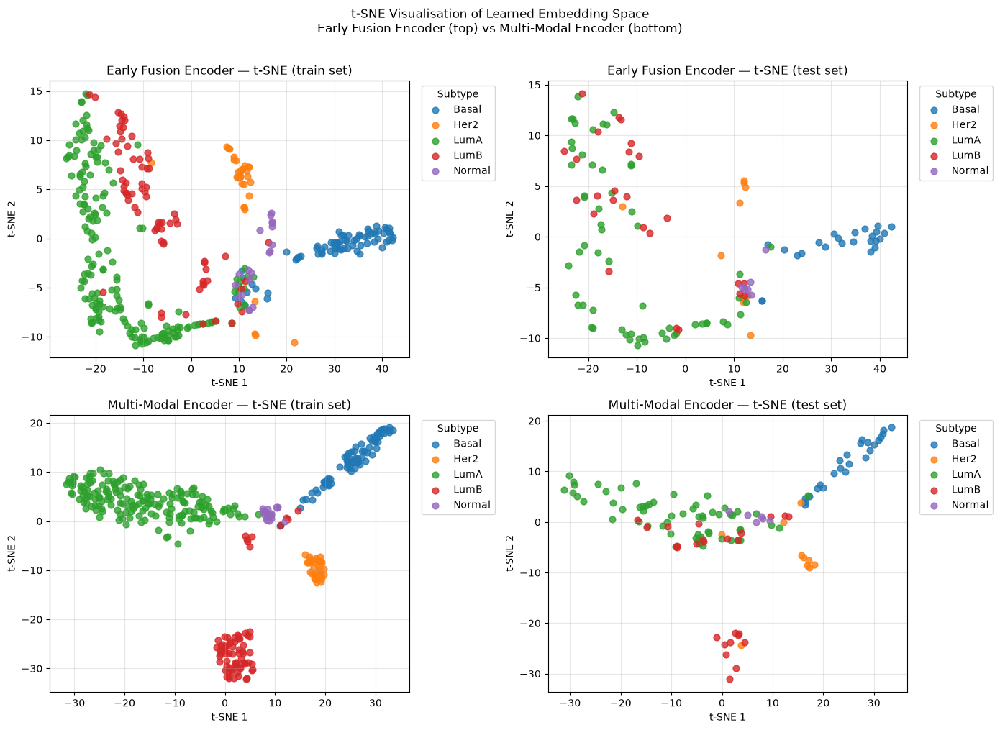
9. Per-omic encoder embedding spaces (t-SNE)#
The joint t-SNE in Section 8 visualised the combined multi-omic embedding. Here we look inside the model and visualise what each individual omic encoder has learned.
Each encoder maps its raw input (e.g. ~20,000 transcriptomic features) down to a
view_embedding_dim-dimensional vector. We run t-SNE on those per-omic embeddings
separately to ask:
How much subtype structure does each omic view contribute on its own?
Omic |
Input features |
Encoded to |
|---|---|---|
Transcriptomics |
~20,000 genes |
|
Proteomics |
~200 proteins |
|
Methylation |
~20,000 CpG sites |
|
What to look for
Well-separated clusters → that omic alone carries strong subtype signal.
Mixed / overlapping clusters → the omic contributes less on its own, but may still add complementary information when combined with the other views.
Train / test consistency → similar cluster structure in both splits suggests the encoder has generalised rather than memorised.
Note that get_embeddings is called here with n_mod=i to extract the output of
the i-th view encoder rather than the full joint embedding.
for i , mod in enumerate(['transcriptomics' , 'proteomics' , 'methylation']) :
print(f'Generate Train and Test Embedding for {mod}')
train_emb, train_emb_y = get_embeddings(multi_model.encoders[mod], multi_train_loader , n_mod = i)
test_emb, test_emb_y = get_embeddings(multi_model.encoders[mod], multi_test_loader , n_mod = i)
print(f"[{mod}] Train embedding : {train_emb.shape}")
print(f"[{mod}] Test embedding : {test_emb.shape}")
# ── t-SNE projection ─────────────────────────────────────────────────────────
# Fit t-SNE on all available embeddings (train + test) for a stable layout,
# then colour by the known test labels.
all_emb = np.vstack([train_emb, test_emb])
all_y = np.concatenate([train_emb_y, test_emb_y])
tsne = TSNE(
n_components=2,
perplexity=30,
random_state=RANDOM_STATE,
init="pca",
)
all_tsne = tsne.fit_transform(all_emb)
# Split back into train / test for colouring.
n_train = len(train_emb)
tsne_df = pd.DataFrame({
"TSNE1": all_tsne[:, 0],
"TSNE2": all_tsne[:, 1],
"subtype": label_encoder.inverse_transform(all_y),
"split": ["train"] * n_train + ["test"] * len(test_emb),
})
fig, axes = plt.subplots(1, 2, figsize=(14, 5))
for ax, split in zip(axes, ["train", "test"]):
subset = tsne_df[tsne_df["split"] == split]
for subtype in class_names:
mask = subset["subtype"] == subtype
ax.scatter(subset.loc[mask, "TSNE1"], subset.loc[mask, "TSNE2"],
label=subtype, alpha=0.8, s=40)
ax.set_xlabel("t-SNE 1")
ax.set_ylabel("t-SNE 2")
ax.set_title(f"Multi-Modal Encoder — t-SNE ({split} set)")
ax.legend(title="Subtype", bbox_to_anchor=(1.02, 1), loc="upper left")
ax.grid(True, alpha=0.3)
plt.suptitle("t-SNE Visualisation of Learned Multi-Omic Embedding Space", y=1.01)
plt.tight_layout()
plt.show()
Generate Train and Test Embedding for transcriptomics
[transcriptomics] Train embedding : (375, 32)
[transcriptomics] Test embedding : (125, 32)
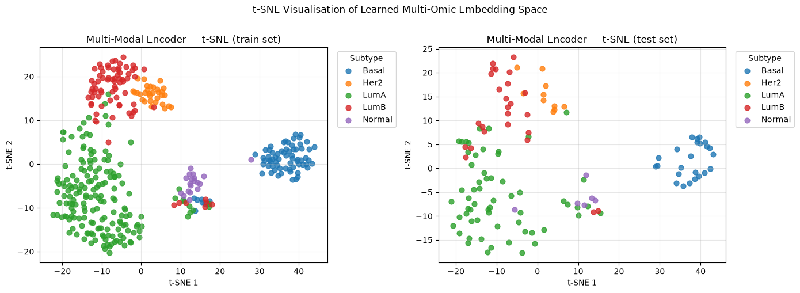
Generate Train and Test Embedding for proteomics
[proteomics] Train embedding : (375, 32)
[proteomics] Test embedding : (125, 32)
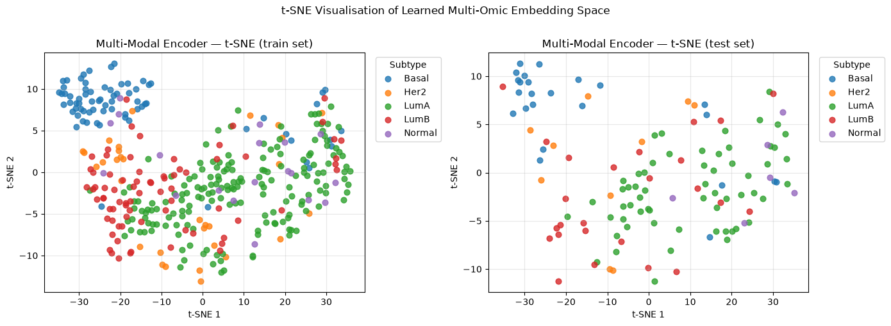
Generate Train and Test Embedding for methylation
[methylation] Train embedding : (375, 32)
[methylation] Test embedding : (125, 32)
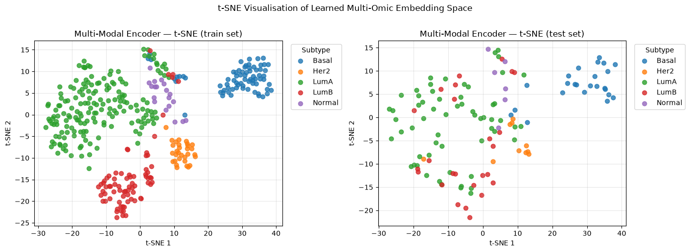
10. Gradient-based feature importance (Integrated Gradients)#
Which input features does the model rely on most?
Method: Integrated Gradients#
Vanilla gradients measure the local slope at the input — they can be noisy and
saturate near decision boundaries. Integrated Gradients (IG) fixes this by
averaging gradients along a straight path from a neutral baseline (zeros) to the
actual input:
Key properties
Property |
Meaning |
|---|---|
Completeness |
Attributions sum exactly to the model output difference from baseline |
Sensitivity |
A feature that changes the output always gets non-zero attribution |
Sign-aware |
Positive = pushes toward predicted class; negative = pushes away |
Implementation cost |
|
def integrated_gradients(
model: nn.Module,
X_views: dict[str, np.ndarray],
y: np.ndarray,
n_steps: int = 50,
batch_size: int = 128,
device: torch.device = device,
) -> tuple[np.ndarray, np.ndarray, list[str]]:
"""
Compute Integrated Gradients attributions for a multi-view classifier.
The reference baseline is the zero vector (mean-centred features are
already centred around zero, so this represents an uninformative patient).
How it works
------------
For each interpolation step α ∈ {0/n, 1/n, …, n/n}:
1. Build interpolated inputs: x_ref + α * (x - x_ref)
2. Run a forward pass to get the logit for the *predicted* class.
3. Run a backward pass to get ∂logit / ∂x_j for every feature j.
Average the gradients across all steps, then multiply by (x - x_ref).
This satisfies the completeness axiom exactly (up to quadrature error).
Complexity
----------
O(n_steps × N / batch_size) forward+backward passes,
independent of the number of features D.
Parameters
----------
model : trained model (MultiOmicEncoder or any *views forward signature)
X_views : {view_name: float32 array (N, D_i)}
y : integer label array (N,) — used to pick the target logit
n_steps : number of Riemann steps (50 is accurate; 20 is fast)
batch_size : patients per mini-batch (reduce if GPU OOM)
device : torch device
Returns
-------
attributions : np.ndarray (N, D_total) — per-patient, per-feature attribution
mean_attrs : np.ndarray (D_total,) — mean |attribution| across patients
feature_names: list[str] — "view:index" label per column
"""
model.eval()
model.to(device)
view_names = list(X_views.keys())
view_dims = [X_views[name].shape[1] for name in view_names]
N = next(iter(X_views.values())).shape[0]
D_total = sum(view_dims)
boundaries = np.cumsum([0] + view_dims)
# ── Pre-load to GPU ───────────────────────────────────────────────────────
Xg = [
torch.tensor(X_views[name], dtype=torch.float32, device=device)
for name in view_names
]
yg = torch.tensor(y, dtype=torch.long, device=device)
# Baseline = zeros (features are StandardScaler-normalised, so 0 = mean patient)
baselines = [torch.zeros_like(x) for x in Xg]
deltas = [x - b for x, b in zip(Xg, baselines)] # (x - x_ref) per view
# Accumulator: sum of gradients across steps, shape (N, D_total)
grad_sum = torch.zeros(N, D_total, device=device)
# ── Riemann integration over interpolation steps ──────────────────────────
alphas = torch.linspace(0, 1, n_steps + 1, device=device) # [0, 1/n, ..., 1]
for alpha in alphas:
# Interpolated inputs for this step.
interp = [b + alpha * d for b, d in zip(baselines, deltas)]
# Process in mini-batches to control GPU memory.
for start in range(0, N, batch_size):
sl = slice(start, start + batch_size)
batch = [v[sl].detach().requires_grad_(True) for v in interp]
targets = yg[sl]
logits = model(*batch)
# Score = logit of the true class (measures confidence in correct label).
score = logits.gather(1, targets.unsqueeze(1)).squeeze(1).sum()
score.backward()
# Collect gradients from each view and concatenate along feature axis.
grads = torch.cat([b.grad for b in batch], dim=1) # (batch, D_total)
grad_sum[start:start + grads.shape[0]] += grads.detach()
# Trapezoidal correction: all interior steps counted once, endpoints halved.
grad_sum = grad_sum / n_steps
# Multiply averaged gradient by (x - baseline).
delta_cat = torch.cat(deltas, dim=1) # (N, D_total)
attributions = (grad_sum * delta_cat).cpu().numpy() # (N, D_total)
# Mean absolute attribution across patients → one importance score per feature.
mean_attrs = np.abs(attributions).mean(axis=0) # (D_total,)
# Human-readable labels.
feature_names = []
for name, dim in zip(view_names, view_dims):
feature_names.extend([f"{name}:{i}" for i in range(dim)])
return attributions, mean_attrs, feature_names
# ── Run ───────────────────────────────────────────────────────────────────────
n_features = sum(X_test_views[k].shape[1] for k in X_test_views)
print(f"Running Integrated Gradients …")
print(f" Features : {n_features:,} (scored simultaneously)")
print(f" Steps : 50")
print(f" Device : {device}\n")
attributions, mean_attrs, feature_names = integrated_gradients(
multi_model,
X_views=X_test_views,
y=y_test,
n_steps=50,
batch_size=128,
device=device,
)
print(f"Attribution matrix : {attributions.shape} (patients × features)")
print(f"Total features : {len(mean_attrs):,}")
topk_idx = np.argsort(mean_attrs)[::-1][:10]
print("\nTop 10 features by mean |attribution|:")
for rank, j in enumerate(topk_idx, 1):
print(f" {rank:2d}. {feature_names[j]:30s} |attr| = {mean_attrs[j]:.5f}")
Running Integrated Gradients …
Features : 230,459 (scored simultaneously)
Steps : 50
Device : cuda
Attribution matrix : (125, 230459) (patients × features)
Total features : 230,459
Top 10 features by mean |attribution|:
1. proteomics:179 |attr| = 0.00671
2. proteomics:13 |attr| = 0.00598
3. proteomics:124 |attr| = 0.00595
4. proteomics:365 |attr| = 0.00582
5. proteomics:253 |attr| = 0.00571
6. proteomics:141 |attr| = 0.00562
7. proteomics:24 |attr| = 0.00549
8. transcriptomics:20910 |attr| = 0.00541
9. proteomics:282 |attr| = 0.00535
10. transcriptomics:23241 |attr| = 0.00532
# ── Setup ─────────────────────────────────────────────────────────────────────
view_names_ordered = list(X_test_views.keys())
view_dims = [X_test_views[k].shape[1] for k in view_names_ordered]
boundaries = np.cumsum([0] + view_dims)
omic_colors = {
"transcriptomics": "#4C72B0",
"proteomics": "#DD8452",
"methylation": "#55A868",
}
# Per-view slices of mean attributions.
view_attrs = {
name: mean_attrs[boundaries[i]:boundaries[i + 1]]
for i, name in enumerate(view_names_ordered)
}
# Per-view slices of signed attributions (N, D_i) for the heatmap.
view_signed = {
name: attributions[:, boundaries[i]:boundaries[i + 1]]
for i, name in enumerate(view_names_ordered)
}
# ── Figure: 4 panels ─────────────────────────────────────────────────────────
fig = plt.figure(figsize=(18, 15))
gs = fig.add_gridspec(2, 3, hspace=0.44, wspace=0.38)
ax_agg = fig.add_subplot(gs[0, :2]) # top-left wide: per-omic aggregate
ax_dist = fig.add_subplot(gs[0, 2]) # top-right: attribution distributions
ax_top = fig.add_subplot(gs[1, :2]) # bottom-left wide: top-k features
ax_heat = fig.add_subplot(gs[1, 2]) # bottom-right: per-subtype heatmap
# ── Panel 1: Per-omic aggregate mean |attribution| ───────────────────────────
agg_vals = [view_attrs[n].sum()/len(view_attrs[n]) for n in view_names_ordered]
agg_stds = [view_attrs[n].std() for n in view_names_ordered]
x_pos = np.arange(len(view_names_ordered))
bars = ax_agg.bar(
x_pos, agg_vals,
color=[omic_colors[n] for n in view_names_ordered],
width=0.5, zorder=3,
)
ax_agg.errorbar(x_pos, agg_vals, yerr=agg_stds,
fmt="none", color="black", capsize=6, linewidth=1.5, zorder=4)
ax_agg.set_xticks(x_pos)
ax_agg.set_xticklabels([n.capitalize() for n in view_names_ordered], fontsize=12)
ax_agg.set_ylabel("Summed mean |attribution|", fontsize=11)
ax_agg.set_title("Per-omic contribution (Integrated Gradients)"
"Sum of mean |attributions|; error bar = std across features", fontsize=11)
ax_agg.grid(True, axis="y", alpha=0.3, zorder=0)
for bar, val in zip(bars, agg_vals):
ax_agg.text(bar.get_x() + bar.get_width() / 2, val * 1.01,
f"{val:.4f}", ha="center", va="bottom", fontsize=10, fontweight="bold")
# ── Panel 2: Attribution distributions per omic ──────────────────────────────
for name in view_names_ordered:
vals = view_attrs[name]
ax_dist.hist(vals, bins=60, alpha=0.6, color=omic_colors[name],
label=name.capitalize(), density=True)
ax_dist.axvline(vals.mean(), color=omic_colors[name], linestyle="--", linewidth=1.8)
ax_dist.set_xlabel("Mean |attribution|", fontsize=10)
ax_dist.set_ylabel("Density", fontsize=10)
ax_dist.set_title("Feature attribution distributions (dashed = per-omic mean)", fontsize=11)
ax_dist.legend(fontsize=9)
ax_dist.grid(True, alpha=0.3)
# ── Panel 3: Top-20 individual features (horizontal bar) ─────────────────────
TOP_K = 20
topk = np.argsort(mean_attrs)[::-1][:TOP_K]
top_vals = mean_attrs[topk]
top_lbls = [feature_names[j] for j in topk]
top_cols = [omic_colors[feature_names[j].split(":")[0]] for j in topk]
y_pos = np.arange(TOP_K)[::-1]
ax_top.barh(y_pos, top_vals, color=top_cols, align="center", alpha=0.85)
ax_top.set_yticks(y_pos)
ax_top.set_yticklabels(top_lbls, fontsize=8.5)
ax_top.set_xlabel("Mean |attribution| across test patients", fontsize=10)
ax_top.set_title(f"Top {TOP_K} most important features", fontsize=11)
ax_top.grid(True, axis="x", alpha=0.3)
patches = [plt.Rectangle((0, 0), 1, 1, color=omic_colors[n]) for n in view_names_ordered]
ax_top.legend(patches, [n.capitalize() for n in view_names_ordered],
loc="lower right", fontsize=8)
# ── Panel 4: Signed attribution heatmap — top features × subtype ─────────────
# Average signed attributions per subtype across the top-20 features.
subtypes = label_encoder.inverse_transform(y_test)
unique_sub = class_names
top_feat_lbls = [feature_names[j] for j in topk]
heatmap_data = np.zeros((TOP_K, len(unique_sub)))
for s_i, sub in enumerate(unique_sub):
mask = subtypes == sub
# Mean signed attribution for each top feature, averaged over patients of this subtype.
heatmap_data[:, s_i] = attributions[mask][:, topk].mean(axis=0)
# Diverging colormap centred at 0.
vmax = np.abs(heatmap_data).max()
im = ax_heat.imshow(heatmap_data, aspect="auto", cmap="RdBu_r",
vmin=-vmax, vmax=vmax)
ax_heat.set_xticks(np.arange(len(unique_sub)))
ax_heat.set_xticklabels(unique_sub, rotation=45, ha="right", fontsize=8)
ax_heat.set_yticks(np.arange(TOP_K))
ax_heat.set_yticklabels(top_feat_lbls, fontsize=7.5)
ax_heat.set_title("Signed attributions per subtype"
"(red = pushes toward class, blue = away)", fontsize=10)
plt.colorbar(im, ax=ax_heat, shrink=0.8, label="Mean signed attribution")
plt.suptitle(
f"Integrated Gradients Feature Importance · {len(mean_attrs):,} features · 50 steps · O(steps) not O(features)",
fontsize=12, fontweight="bold", y=1.01,
)
plt.show()
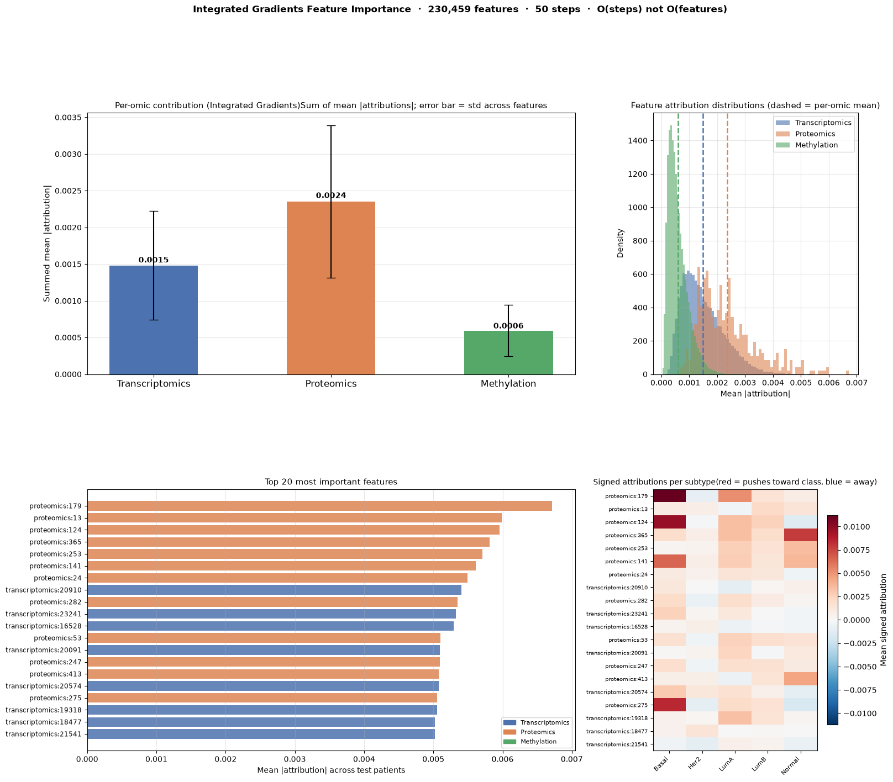
11. Feature reduction and memory efficiency#
The multi-modal encoder does not just learn better representations — it also produces a dramatically smaller patient profile.
This matters when embeddings are passed downstream (clustering, survival modelling, visualisation):
Representation |
Shape |
What it is |
|---|---|---|
Concatenated raw features |
|
All scaled input columns |
Multi-omic embedding |
|
Learned compact profile |
Below we quantify the reduction in dimensionality and memory footprint.
# ── Dimensions ────────────────────────────────────────────────────────────────
n_patients_train = X_train_early.shape[0]
n_patients_test = X_test_early.shape[0]
n_patients_all = n_patients_train + n_patients_test
raw_dim = X_train_early.shape[1] # all omics concatenated
embed_dim = sum(
multi_model.encoders[i][0].out_features
for i in ["transcriptomics", "proteomics", "methylation"]
) # learned embedding
reduction_factor = raw_dim / embed_dim
reduction_pct = (1 - embed_dim / raw_dim) * 100
print("=" * 55)
print(" Dimensionality")
print("=" * 55)
print(f" Raw concatenated features : {raw_dim:>8,d} columns")
for name, X in X_train_views.items():
print(f" └─ {name:15s} : {X.shape[1]:>8,d}")
print(f" Multi-omic embedding : {embed_dim:>8,d} columns")
print(f" Reduction factor : {reduction_factor:>8.1f}×")
print(f" Dimensionality saved : {reduction_pct:>7.1f} %")
# ── Memory (float32 = 4 bytes) ────────────────────────────────────────────────
bytes_per_element = 4 # float32
raw_bytes = n_patients_all * raw_dim * bytes_per_element
embed_bytes = n_patients_all * embed_dim * bytes_per_element
def human_bytes(b):
if b >= 1_000_000:
return f"{b / 1_000_000:.2f} MB"
if b >= 1_000:
return f"{b / 1_000:.1f} KB"
return f"{b} B"
print()
print("=" * 55)
print(f" Memory (all {n_patients_all} patients, float32)")
print("=" * 55)
print(f" Raw matrix : {human_bytes(raw_bytes):>12s} ({raw_bytes:,} bytes)")
print(f" Embedding : {human_bytes(embed_bytes):>12s} ({embed_bytes:,} bytes)")
print(f" Memory saved : {human_bytes(raw_bytes - embed_bytes):>12s} ({(1 - embed_bytes/raw_bytes)*100:.1f} %)")
# ── Summary bar chart ─────────────────────────────────────────────────────────
import matplotlib.pyplot as plt
import matplotlib.patches as mpatches
import numpy as np
fig, axes = plt.subplots(1, 2, figsize=(12, 5))
# --- Panel 1: Dimensionality breakdown ---
ax = axes[0]
# Stacked bar showing per-omic contribution to raw vs embedding
view_dims = [X.shape[1] for X in X_train_views.values()]
view_names = list(X_train_views.keys())
view_colors = ["#4C72B0", "#DD8452", "#55A868"]
# Raw: stacked per-omic contributions
bottoms = 0
for dim, name, color in zip(view_dims, view_names, view_colors):
ax.bar(0, dim, bottom=bottoms, color=color, width=0.4, label=name)
bottoms += dim
# Embedding: single bar
ax.bar(1, embed_dim, width=0.4, color="#8172B2", label="Joint embedding")
ax.set_xticks([0, 1])
ax.set_xticklabels(["Raw concatenated\nfeatures", "Multi-omic\nembedding"])
ax.set_ylabel("Number of dimensions")
ax.set_title("Dimensionality Comparison")
ax.legend(loc="upper right", fontsize=8)
ax.set_yscale("log")
ax.yaxis.set_major_formatter(plt.FuncFormatter(lambda x, _: f"{int(x):,}"))
ax.grid(True, axis="y", alpha=0.3)
# Annotate
ax.text(0, raw_dim * 1.1, f"{raw_dim:,}", ha="center", va="bottom", fontsize=9, fontweight="bold")
ax.text(1, embed_dim * 1.1, f"{embed_dim}", ha="center", va="bottom", fontsize=9, fontweight="bold")
# --- Panel 2: Memory footprint ---
ax2 = axes[1]
labels = ["Raw matrix", "Multi-omic\nembedding"]
sizes = [raw_bytes / 1e6, embed_bytes / 1e6]
colors = ["#C44E52", "#55A868"]
bars = ax2.bar(labels, sizes, color=colors, width=0.4)
ax2.set_ylabel("Memory (MB, float32)")
ax2.set_title(f"Memory Footprint\n({n_patients_all} patients)")
ax2.grid(True, axis="y", alpha=0.3)
for bar, val in zip(bars, sizes):
ax2.text(
bar.get_x() + bar.get_width() / 2,
bar.get_height() + max(sizes) * 0.02,
f"{val:.2f} MB",
ha="center", va="bottom", fontsize=10, fontweight="bold"
)
# Annotate savings arrow
ax2.annotate(
f"{reduction_pct:.0f}% reduction",
xy=(1, sizes[1]),
xytext=(0.5, (sizes[0] + sizes[1]) / 2),
fontsize=9,
color="#2d6a2d",
ha="center",
arrowprops=dict(arrowstyle="-[", color="#2d6a2d", lw=1.5),
)
plt.suptitle(
f"{reduction_factor:.0f}× fewer dimensions · {reduction_pct:.0f}% less memory",
fontsize=12, fontweight="bold", y=1.01,
)
plt.tight_layout()
plt.show()
=======================================================
Dimensionality
=======================================================
Raw concatenated features : 230,459 columns
└─ transcriptomics : 29,995
└─ proteomics : 464
└─ methylation : 200,000
Multi-omic embedding : 96 columns
Reduction factor : 2400.6×
Dimensionality saved : 100.0 %
=======================================================
Memory (all 500 patients, float32)
=======================================================
Raw matrix : 460.92 MB (460,918,000 bytes)
Embedding : 192.0 KB (192,000 bytes)
Memory saved : 460.73 MB (100.0 %)
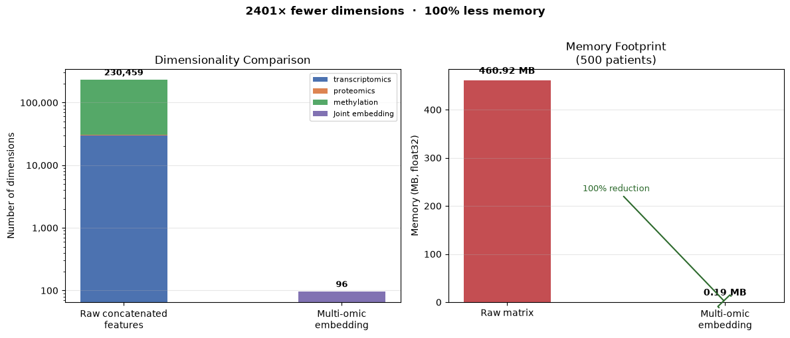
12. Takeaways#
Early integration MLP#
Concatenates all omic features before modelling.
Simple and useful as a baseline.
Does not explicitly represent omic-specific structure.
Multi-modal encoder#
Keeps each omic separate at the input.
Learns omic-specific embeddings before combining them.
Produces a compact patient-level embedding that can be reused downstream.
Embedding structure (visible in PCA / t-SNE) reflects learned subtype information.
Link to the next part#
The key output from this section is the multi-omic embedding matrix.
In the next part, this representation can be used for:
patient stratification and clustering
survival modelling
biological interpretation of latent patient profiles
transfer to other tasks with limited labels